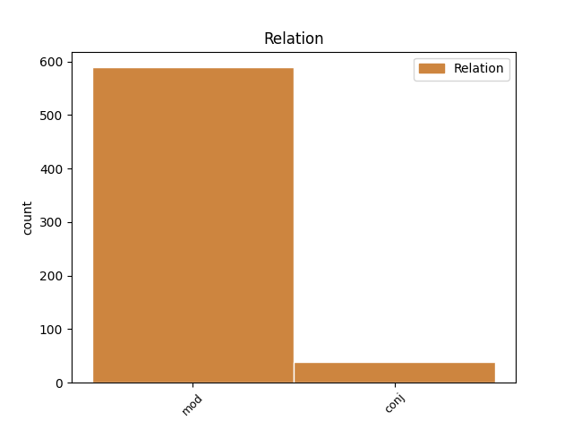
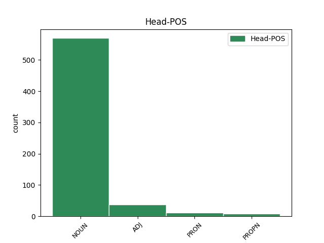
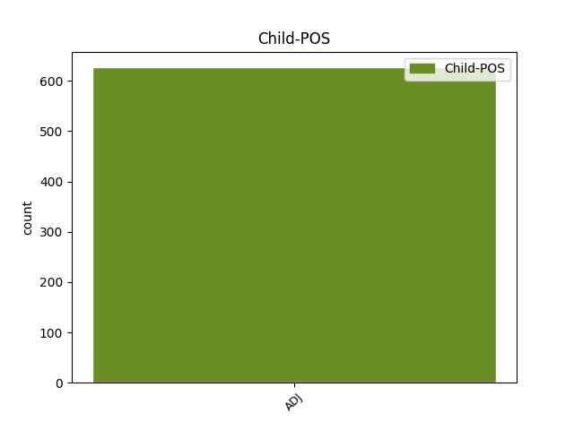

Distribution of features within this leaf



Agreement Rules sorted by frequency.
- When the dependent token is the modifer(mod) of the head token, and the dependent token is ADJ.
1 Garantii _ _ _ _ 0 _ _ _
2 on _ _ _ _ 0 _ _ _
3 ilmselt _ _ _ _ 0 _ _ _
4 selle _ _ _ _ 0 _ _ _
5 pärast _ _ _ _ 0 _ _ _
6 välja _ _ _ _ 0 _ _ _
7 mõeldud _ _ _ _ 0 _ _ _
8 et _ _ _ _ 0 _ _ _
9 100 _ _ _ _ 0 _ _ _
10 % _ _ _ _ 0 _ _ _
11 kvaliteeti _ _ _ _ 0 _ _ _
12 ei _ _ _ _ 0 _ _ _
13 taga _ _ _ _ 0 _ _ _
14 keegi _ _ _ _ 0 _ _ _
15 , _ _ _ _ 0 _ _ _
16 ega _ _ _ _ 0 _ _ _
17 suuda _ _ _ _ 0 _ _ _
18 välistada _ _ _ _ 0 _ _ _
19 väiksemaid väiksem ADJ A Case=Par|Degree=Cmp|Number=Plur 20 mod _ _
20 defekte defekt NOUN S Case=Par|Number=Plur 0 _ _ _
21 toodetel _ _ _ _ 0 _ _ _
22 , _ _ _ _ 0 _ _ _
23 mis _ _ _ _ 0 _ _ _
24 kasutades _ _ _ _ 0 _ _ _
25 esile _ _ _ _ 0 _ _ _
26 tulevad _ _ _ _ 0 _ _ _
27 .. _ _ _ _ 0 _ _ _
28 isegi _ _ _ _ 0 _ _ _
29 see _ _ _ _ 0 _ _ _
30 puuvilja _ _ _ _ 0 _ _ _
31 firma _ _ _ _ 0 _ _ _
32 mitte _ _ _ _ 0 _ _ _
33 , _ _ _ _ 0 _ _ _
34 rääkimata _ _ _ _ 0 _ _ _
35 pesumasina _ _ _ _ 0 _ _ _
36 firmast _ _ _ _ 0 _ _ _
37 . _ _ _ _ 0 _ _ _
1 See _ _ _ _ 0 _ _ _
2 on _ _ _ _ 0 _ _ _
3 iseenesest _ _ _ _ 0 _ _ _
4 kena _ _ _ _ 0 _ _ _
5 Sony _ _ _ _ 0 _ _ _
6 poolt _ _ _ _ 0 _ _ _
7 , _ _ _ _ 0 _ _ _
8 et _ _ _ _ 0 _ _ _
9 nende _ _ _ _ 0 _ _ _
10 telefonides _ _ _ _ 0 _ _ _
11 niisama _ _ _ _ 0 _ _ _
12 kõkuvaid kõku=v ADJ A Case=Par|Degree=Pos|Number=Plur|Tense=Pres|VerbForm=Part|Voice=Act 0 _ _ _
13 ja _ _ _ _ 0 _ _ _
14 krõvisevaid krõvise=v ADJ A Case=Par|Degree=Pos|Number=Plur|Tense=Pres|VerbForm=Part|Voice=Act 12 conj _ _
15 asju _ _ _ _ 0 _ _ _
16 ei _ _ _ _ 0 _ _ _
17 ole _ _ _ _ 0 _ _ _
18 . _ _ _ _ 0 _ _ _
Disagree Examples:
1 küsige _ _ _ _ 0 _ _ _
2 linnavalitsusest _ _ _ _ 0 _ _ _
3 kellele _ _ _ _ 0 _ _ _
4 see _ _ _ _ 0 _ _ _
5 niitmata niit=mata ADJ A Case=Abe|Degree=Pos|VerbForm=Sup|Voice=Act 8 mod _ _
6 ja _ _ _ _ 0 _ _ _
7 risustatud _ _ _ _ 0 _ _ _
8 plats plats NOUN S Case=Nom|Number=Sing 0 _ _ _
9 kuulub _ _ _ _ 0 _ _ _
10 ? _ _ _ _ 0 _ _ _
11 Olen _ _ _ _ 0 _ _ _
12 kindel _ _ _ _ 0 _ _ _
13 , _ _ _ _ 0 _ _ _
14 et _ _ _ _ 0 _ _ _
15 sellel _ _ _ _ 0 _ _ _
16 lapikesel _ _ _ _ 0 _ _ _
17 on _ _ _ _ 0 _ _ _
18 omanik _ _ _ _ 0 _ _ _
19 kes _ _ _ _ 0 _ _ _
20 selle _ _ _ _ 0 _ _ _
21 kunagi _ _ _ _ 0 _ _ _
22 ostnud _ _ _ _ 0 _ _ _
23 ja _ _ _ _ 0 _ _ _
24 nii _ _ _ _ 0 _ _ _
25 ta _ _ _ _ 0 _ _ _
26 seisab _ _ _ _ 0 _ _ _
27 . _ _ _ _ 0 _ _ _
28 Ja _ _ _ _ 0 _ _ _
29 teine _ _ _ _ 0 _ _ _
30 valik _ _ _ _ 0 _ _ _
31 on _ _ _ _ 0 _ _ _
32 võib-olla _ _ _ _ 0 _ _ _
33 lihtsalt _ _ _ _ 0 _ _ _
34 linnamaa _ _ _ _ 0 _ _ _
35 . _ _ _ _ 0 _ _ _
1 Olen _ _ _ _ 0 _ _ _
2 vahel _ _ _ _ 0 _ _ _
3 teinud _ _ _ _ 0 _ _ _
4 ka _ _ _ _ 0 _ _ _
5 paar _ _ _ _ 0 _ _ _
6 päeva _ _ _ _ 0 _ _ _
7 tuima tuim ADJ A Case=Gen|Degree=Pos|Number=Sing 8 mod _ _
8 järjekindlusega järje_kindlus NOUN S Case=Com|Number=Sing 0 _ _ _
9 praekartuleid _ _ _ _ 0 _ _ _
10 sibulaga _ _ _ _ 0 _ _ _
11 , _ _ _ _ 0 _ _ _
12 sest _ _ _ _ 0 _ _ _
13 muud _ _ _ _ 0 _ _ _
14 pole _ _ _ _ 0 _ _ _
15 lihtsalt _ _ _ _ 0 _ _ _
16 pähe _ _ _ _ 0 _ _ _
17 tulnud _ _ _ _ 0 _ _ _
18 . _ _ _ _ 0 _ _ _
1 Tema _ _ _ _ 0 _ _ _
2 toiduvalmistamine _ _ _ _ 0 _ _ _
3 teleekraanil _ _ _ _ 0 _ _ _
4 : _ _ _ _ 0 _ _ _
5 peened _ _ _ _ 0 _ _ _
6 prantsusepärased _ _ _ _ 0 _ _ _
7 hääldused _ _ _ _ 0 _ _ _
8 , _ _ _ _ 0 _ _ _
9 naerul _ _ _ _ 0 _ _ _
10 nägu _ _ _ _ 0 _ _ _
11 ja _ _ _ _ 0 _ _ _
12 „ _ _ _ _ 0 _ _ _
13 tsip _ _ _ _ 0 _ _ _
14 – _ _ _ _ 0 _ _ _
15 tsip _ _ _ _ 0 _ _ _
16 – _ _ _ _ 0 _ _ _
17 tsip _ _ _ _ 0 _ _ _
18 “ _ _ _ _ 0 _ _ _
19 mängleva mänglev ADJ A Case=Gen|Degree=Pos|Number=Sing|Tense=Pres|VerbForm=Part|Voice=Act 20 mod _ _
20 kergusega kergus NOUN S Case=Com|Number=Sing 0 _ _ _
21 maitseainete _ _ _ _ 0 _ _ _
22 käsitlemine _ _ _ _ 0 _ _ _
23 andis _ _ _ _ 0 _ _ _
24 senisele _ _ _ _ 0 _ _ _
25 toidutegemisele _ _ _ _ 0 _ _ _
26 täiesti _ _ _ _ 0 _ _ _
27 uue _ _ _ _ 0 _ _ _
28 suuna _ _ _ _ 0 _ _ _
29 . _ _ _ _ 0 _ _ _
1 Kire _ _ _ _ 0 _ _ _
2 allikaks _ _ _ _ 0 _ _ _
3 on _ _ _ _ 0 _ _ _
4 see _ _ _ _ 0 _ _ _
5 , _ _ _ _ 0 _ _ _
6 kui _ _ _ _ 0 _ _ _
7 teed _ _ _ _ 0 _ _ _
8 toitu _ _ _ _ 0 _ _ _
9 jätkuva jätkuv ADJ A Case=Gen|Degree=Pos|Number=Sing|Tense=Pres|VerbForm=Part|Voice=Act 10 mod _ _
10 vaimustusega vaimustus NOUN S Case=Com|Number=Sing 0 _ _ _
11 , _ _ _ _ 0 _ _ _
12 pead _ _ _ _ 0 _ _ _
13 sõna _ _ _ _ 0 _ _ _
14 otseses _ _ _ _ 0 _ _ _
15 mõttes _ _ _ _ 0 _ _ _
16 dialoogi _ _ _ _ 0 _ _ _
17 toidukomponentidega _ _ _ _ 0 _ _ _
18 , _ _ _ _ 0 _ _ _
19 samastudes _ _ _ _ 0 _ _ _
20 sellega _ _ _ _ 0 _ _ _
21 , _ _ _ _ 0 _ _ _
22 mida _ _ _ _ 0 _ _ _
23 teed _ _ _ _ 0 _ _ _
24 . _ _ _ _ 0 _ _ _
1 Dieedi _ _ _ _ 0 _ _ _
2 ajal _ _ _ _ 0 _ _ _
3 kalduvad _ _ _ _ 0 _ _ _
4 inimesed _ _ _ _ 0 _ _ _
5 sööma _ _ _ _ 0 _ _ _
6 imeasju _ _ _ _ 0 _ _ _
7 - _ _ _ _ 0 _ _ _
8 kapsasuppi _ _ _ _ 0 _ _ _
9 , _ _ _ _ 0 _ _ _
10 kus _ _ _ _ 0 _ _ _
11 on _ _ _ _ 0 _ _ _
12 ainult _ _ _ _ 0 _ _ _
13 vesi _ _ _ _ 0 _ _ _
14 ja _ _ _ _ 0 _ _ _
15 köögiviljad _ _ _ _ 0 _ _ _
16 ja _ _ _ _ 0 _ _ _
17 siis _ _ _ _ 0 _ _ _
18 süüakse _ _ _ _ 0 _ _ _
19 pikkade pikk ADJ A Case=Gen|Degree=Pos|Number=Plur 20 mod _ _
20 hammastega hammas NOUN S Case=Com|Number=Plur 0 _ _ _
21 . _ _ _ _ 0 _ _ _